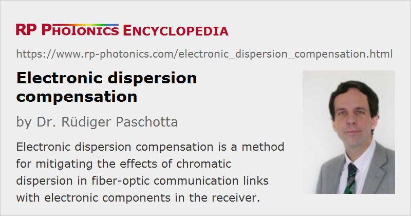

Electronic Dispersion Compensation
Acronym: EDC
Definition: a method for mitigating the effects of chromatic dispersion in fiber-optic communication links with electronic components in the receiver
German: elektronische Dispersionskompensation
Category: lightwave communications
How to cite the article; suggest additional literature
Author: Dr. Rüdiger Paschotta
Systems for optical fiber communications can be affected by the effect of chromatic dispersion of the fibers used. Dispersion in a fiber-optic link broadens and distorts the features of the bit symbols, making it more difficult to decode the signal. Dispersion compensation is normally be done in the optical domain, i.e., before photodetection. However, there are also methods of electronic dispersion compensation, utilizing electronics for that purpose.
Two quite different approaches of electronic dispersion compensation have to be distinguished, which are applied to different types of data receivers:
- In a receiver with direct detection, the effect of dispersion cannot be really removed, because it is essentially a frequency-dependent phase change, and the phase information is lost in the detection process. However, there are methods which can at least mitigate the dispersion effect as long as it is not too strong. Typically, such methods rely on tapped delay line equalizers (transversal filters), where portions of the electronic input signal are subject to different time delays and recombined after amplification with suitable levels. Purely linear equalization techniques can improve the signal processing even in the presence of nonlinear distortions [3], such as those arising from self-phase modulation due to fiber nonlinearities. There are also nonlinear equalization techniques. For example, nonlinear decision-feedback equalizers (DFE) can partly compensate for lost spectral information by making decision thresholds dependent on past decisions made in the receiver. Provided that the settings of such systems are carefully optimized, the signal quality can be significantly improved, even though the full potential of true optical dispersion compensation can not be reached. The parameters may be adjusted automatically using feedback techniques based on digital or analog signal processing, minimizing the bit error rate. Even the effect of intermodal dispersion in multimode fibers (as used in short-distance fiber-optic links) can be mitigated.
- A receiver using optical heterodyne detection (or homodyne detection) offers a higher potential for electronic dispersion compensation, as the phase information is not lost. When an electronic filter with an appropriate frequency response is applied to the intermediate frequency signal, this can directly remove the effect of chromatic dispersion [1, 2, 4].
Even a non-perfect compensation system can have various benefits, obtained at limited cost. The bit rate or transmission distance can be increased, e.g., by 20% or even 50%. Alternatively, electronic dispersion compensation may allow the use of a cheaper type of transmitter (e.g. a directly modulated laser instead of a system with an external modulator) and thus lead to significant cost savings.
A technical challenge of great importance for applications is automatic adaptation of the parameters of the electronic dispersion compensator to the link properties, because the ideal parameter settings depend on the properties of the fiber link and the transmitter, and manual optimization is not cost-effective. Particularly in systems with multimode fibers, the optimum parameters may also drift with time.
Questions and Comments from Users
Here you can submit questions and comments. As far as they get accepted by the author, they will appear above this paragraph together with the author’s answer. The author will decide on acceptance based on certain criteria. Essentially, the issue must be of sufficiently broad interest.
Please do not enter personal data here; we would otherwise delete it soon. (See also our privacy declaration.) If you wish to receive personal feedback or consultancy from the author, please contact him e.g. via e-mail.
By submitting the information, you give your consent to the potential publication of your inputs on our website according to our rules. (If you later retract your consent, we will delete those inputs.) As your inputs are first reviewed by the author, they may be published with some delay.
Bibliography
| [1] | K. Iwashita and N. Takachio, “Chromatic dispersion compensation in coherent optical communications”, IEEE J. Lightwave Technol. 8 (3), 367 (1990), doi:10.1109/50.50733 |
| [2] | J. H. Winters, “Equalization in coherent lightwave systems using a fractionally spaced equalizer”, IEEE J. Lightwave Technol. 8 (10), 1487 (1990), doi:10.1109/50.59186 |
| [3] | J. C. Cartledge et al., “Performance of smart lightwave receivers with linear equalization”, IEEE J. Lightwave Technol. 10 (8), 1105 (1992), doi:10.1109/50.156851 |
| [4] | K. Yonenaga and N. Takachio, “A fiber chromatic dispersion compensation technique with an optical SSB transmission in optical homodyne detection systems”, IEEE Photon. Technol. Lett. 5 (8), 949 (1993), doi:10.1109/68.238265 |
| [5] | Q. Yu and A. Shanbhag, “Electronic data processing for error and dispersion compensation”, IEEE J. Lightwave Technol. 24 (12), 4514 (2006), doi:10.1109/JLT.2006.886065 |
See also: chromatic dispersion, dispersion compensation, optical fiber communications, optical heterodyne detection
and other articles in the category lightwave communications
|  |
If you like this page, please share the link with your friends and colleagues, e.g. via social media:
These sharing buttons are implemented in a privacy-friendly way!